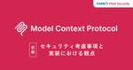
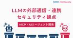
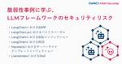

GMO Flatt Security Blog
https://blog.flatt.tech/
株式会社GMO Flatt Securityの公式ブログです。プロダクト開発やプロダクトセキュリティに関する技術的な知見・トレンドを伝える記事を発信しています。
フィード

MCPにおけるセキュリティ考慮事項と実装における観点（前編） 46
46
GMO Flatt Security Blog
MCP logo ©︎ 2024–2025 Anthropic, PBC and contributors | MIT license はじめに 本記事は、セキュリティエンジニアのAzaraこと齋藤とコーポレートセキュリティエンジニアのhamayanhamayanが、社内で行ったディスカッションを元に記述した記事です。 本記事は、MCP の利活用の際に考えるべき、セキュリティに関する考慮事項や、脅威の想定、実装時気にすべき観点などについてまとめたシリーズの前編になります。前編では、MCPに関する基本的な事項を扱いながら、利用者側の目線でMCPに対するセキュリティを考えていきます。社内での利活用…
6時間前

MCPやAIエージェントに必須の「LLMの外部通信・連携」におけるセキュリティ観点 176
GMO Flatt Security Blog
はじめに こんにちは。GMO Flatt Security株式会社 セキュリティエンジニアの山川(@dai_shopper3)です。 LLMはテキスト生成、要約、質問応答といった多様な用途に高い能力を発揮しますが、単体での活用にはいくつかの制約があります。そもそもモデル単体には、ただ入力された自然言語に対して文字列を生成するだけの機能しかありませんから、LLMをもとに自律的に行動するAIを作るには、外部と情報をやり取りし、具体的なアクションを実行するための手段が必要です。 また、モデルの知識は訓練データの収集時点で停止しており、それ以降の最新情報や特定の非公開情報も知りません（ナレッジカットオ…
1日前

LLMフレームワークのセキュリティリスク - LangChain, Haystack, LlamaIndex等の脆弱性事例に学ぶ 165
GMO Flatt Security Blog
はじめに こんにちは。GMO Flatt Security株式会社セキュリティエンジニアの森(@ei01241)です。 近年、大規模言語モデル（LLM）の進化により、チャットボット、データ分析・要約、自律型エージェントなど、多岐にわたるAIアプリケーション開発が進んでいます。LangChainやLlamaIndexのようなLLMフレームワークは、LLM連携や外部データ接続などを抽象化し開発効率を向上させる一方、その利便性の背後には新たなセキュリティリスクも存在します。 本稿では、LLMフレームワークを利用・開発する際に発生しやすい脆弱性を具体的なCVEを交えて解説し、それぞれ脆弱性から教訓を学…
2日前

LLM / 生成AIを活用するアプリケーション開発におけるセキュリティリスクと対策
GMO Flatt Security Blog
はじめに こんにちは、GMO Flatt Security株式会社セキュリティエンジニアの佐藤(@Nick_nick310)です。 近年、大規模言語モデル(LLM、 Large Language Models)の進化と普及は目覚ましく、多くのサービスや業務プロセスで生成AIとして活用されています。LLMは多大なメリットをもたらす一方で、その特性に起因する新たなセキュリティリスクも指摘されており、安全な活用のためには十分な理解と対策が不可欠です。LLMを自社のサービスや業務に組み込む際、どのようなセキュリティ上の課題に直面する可能性があるでしょうか。 本稿では、LLMを活用したアプリケーションを…
20日前
JAWS DAYS 2025で180人に聞いた！AWSのセキュリティ課題ランキング
GMO Flatt Security Blog
こんにちは。GMO Flatt Securityの@toyojuniです。 昨年に引き続き、今年もGMO Flatt Securityは3月1日(土)に池袋サンシャインシティにて開催されたJAWS DAYS 2025にPlatinum Supporterとして協賛し、ブースを出展させていただきました！ JAWS DAYSとは 日本全国に60以上の支部をもつAWSのユーザーグループ「JAWS-UG」が主催するもので、参加は有料でありながら1000人以上が参加者として登録している非常に大規模なものです。今年も大盛況でした。 クラウドセキュリティのサービスも提供する我々にとって、日々AWSを用いてプ…
21日前
【RubyKaigi 2025クイズ解説】GitLabの事例に学ぶ、Webアプリケーションの重大な脆弱性
GMO Flatt Security Blog
GMO Flatt Securityの大崎です。RubyKaigi 2025の弊社ブースで「バグバウンティクイズ」に回答いただいた皆様ありがとうございました。 私はブースには立ちませんでしたが、今回作問を担当しました。各脆弱性の解説ブログとして本記事を執筆させていただきます。 ブースでも主に紹介させていただいたセキュリティ診断AIエージェント「Takumi」に関しては以下のバナーより詳細をご覧ください。 バグバウンティクイズ in RubyKaigi 2025とは？ 言わずと知れたRuby製アプリケーション・GitLabはバグバウンティプログラムを運用していて、その中で2024年に報告された脆…
22日前
アプリケーションロジック固有の脆弱性を防ぐ、開発者のためのセキュリティ観点をまとめたスライド（全59ページ）を無償公開しました
GMO Flatt Security Blog
はじめに こんにちは、GMO Flatt Security の小島です。 先週、GMO Flatt Securityでは日本初のセキュリティ診断AIエージェントである「Takumi」をリリースしました。Takumiは高度なセキュリティレビューを自律的に行えるAIです。 今回はこのリリースに関連し、機能開発におけるロジックの脆弱性を防ぐためのセキュリティ観点をまとめたスライドを公開しました。 AIエージェントである Takumi は、ソースコードを元にセキュリティ診断を行いますが、脆弱なスニペットのパターンマッチに留まらず、アプリケーション固有のロジックを理解し、ロジックに潜む脆弱性まで発見しま…
1ヶ月前
Webセキュリティ最大のリスクにAIで立ち向かう。Shisho Cloud 認可制御診断機能の技術的解説
GMO Flatt Security Blog
はじめに GMO Flatt Security は2025年3月5日「認可制御不備を検知できる自動診断機能」をリリースしました。 「Shisho Cloud byGMO」の認可制御診断でできること ロールベースアクセス制御も、マルチテナントアプリケーションの認可制御も、Shisho Cloudで自動診断 認可制御診断のセットアップはShisho AIで一瞬 Shisho AIがアプリケーションの仕様を把握し、権限ごとに可能な操作を一覧化した権限マトリクスを自動で作成 認可制御不備にすぐ気付ける 見つかった認可制御不備がダッシュボードで一目で分かる 新規アラートのSlack通知も可能 開発サイク…
2ヶ月前
GMO Flatt Security Top 10 - 2025年版
GMO Flatt Security Blog
はじめに こんにちは。GMO Flatt Security株式会社の @toyojuni です。 弊社は "エンジニアの背中を預かる" をミッションにさまざまな開発組織のセキュリティをサポートしていますが、その主たるサービスがWebアプリケーション・Web APIの脆弱性診断です。今回、この脆弱性診断サービスの中でお客様に報告した1000個以上の脆弱性データをもとに、検出数ランキングの形でそのリスクの実態を分析しました。 同様にWebアプリの脆弱性を分析したものとしてはOWASP Top 10が世界的に有名ですが、グローバルでの分析結果となると日本企業の実態にそのまま当てはまるとは限りませんし…
2ヶ月前
開発組織のためのセキュアコーディング研修の始め方を紹介したスライド（全32ページ）を無償公開しました
GMO Flatt Security Blog
はじめに こんにちは、GMO Flatt Security の小島です。弊社では、KENRO byGMO（ケンロー）という脆弱性への攻撃と修正で学ぶハンズオン演習に特化した、開発者向けのセキュアコーディング学習サービスを開発しています。 flatt.tech 本日はこのサービスに関連して、セキュアコーディング研修を始める上でどのような項目を検討すべきか、そしてその中で最も悩みのタネである外部の学習コンテンツの活用方法についてまとめたスライドを公開しました。 スライドは下記のSpeakerdeckのURLより無料・登録不要で閲覧・ダウンロードいただけます。 https://speakerdeck…
3ヶ月前
OpenWrtへのサプライチェーン攻撃 - SHA-256の脆弱な取り扱いとコマンドインジェクションによるファームウェアアップデートの侵害
GMO Flatt Security Blog
※本記事は筆者RyotaKが英語で執筆した記事を、弊社セキュリティエンジニアryotaromosaoが日本語に翻訳したものになります。 はじめに こんにちは、Flatt SecurityでセキュリティエンジニアをしているRyotaK (@ryotkak)です。 数日前、自宅のネットワークをアップグレードする際に、ルーターのOpenWrtを更新することにしました1。OpenWrtのWebインターフェースであるLuCIにアクセスしたところ、Attended Sysupgradeというセクションがあることに気付き、これを使ってファームウェアをアップグレードしてみることにしました。 機能説明を読んでみ…
5ヶ月前
重複したIAM、拒否と許可どっちが優先？アクセス制御の特性をAWS・Google Cloud・Azure・Firebaseそれぞれについて理解する
GMO Flatt Security Blog
はじめに こんにちは、セキュリティエンジニアの@okazu_dm です。 突然ですが、皆さんは以下のクイズに自信を持って回答できるでしょうか。これはSRE NEXT 2023で弊社が出題したクイズなのですが、それぞれのポリシーに存在するAllow, Denyのうちどれが優先されるかがポイントになります。 クイズの答えはここをクリック クイズの正解は......「④なし」でした。AWSのIAMポリシーは拒否(Deny)優先です。しかし、それは他のクラウドサービスでも果たして同じでしょうか？ 今回の記事では、各種クラウドサービスにおけるアクセス制御について焦点を当てます。具体的には「それぞれのアク…
5ヶ月前
10,000リクエストを166msで送信する、Race Conditionの新手法のリサーチについて
GMO Flatt Security Blog
※本記事は筆者RyotaKが英語で執筆した記事を、弊社セキュリティエンジニアShion1305が日本語に翻訳したものになります。 はじめに こんにちは、Flatt SecurityでセキュリティエンジニアをしているRyotaK(@ryotkak)です。 2023年にPortSwigger社のJames Kettle氏は、同社の記事でSingle-packet attackという新しい攻撃手法を提案しました。これはネットワークのジッター値に関係なくレースコンディションを悪用できるというものです。 Smashing the state machine: the true potential of …
6ヶ月前
BlackHat USA 2024 / BSides Las Vegas / DEF CON 32 に会社の海外研修制度を利用して参加しました！
GMO Flatt Security Blog
はじめに Flatt Security セキュリティエンジニアの Tsubasa、lambdasawa、Osaki です。本ブログでは、2024年8月に開催された Bsides Las Vegas、Black Hat USA 2024、DEF CON 32 に弊社メンバーが参加した際の記録、および、特に興味深かったセッションの詳細についてお伝えします！ なお、本稿の作成にあたっては各セッションの発表内容について可能な限り誤りがないように注意を払って記述しましたが、誤りを含む可能性があります。また、各セッションの内容については、筆者独自の考えや解釈を含む場合があります。本稿を通して気になったセッ…
8ヶ月前
CTFで出題される脆弱性 vs プロダクトセキュリティのリアルな課題
GMO Flatt Security Blog
週末をCTFに費やし、平日の余暇時間をその復習に費やしている @hamayanhamayan です。去年2023年はCTFtime1調べでは66本のCTFに出ていて、自身のブログでは解説記事を40本ほど書いています。 自分はCTFプレイヤーですが、一方で、Flatt Securityはお仕事でプロダクトセキュリティを扱っている会社です。CTFで出題される問題と、プロダクトセキュリティにおける課題の間にはどのような違いがあるのでしょうか？ CTFのヘビープレイヤーの視点から、共通している部分、また、どちらか一方でよく見られる部分について紹介していきたいと思います。色々な形でセキュリティに関わる人…
8ヶ月前
会社の支援制度を活用し、BSides Las Vegasで海外登壇に初挑戦しました！
GMO Flatt Security Blog
はじめに Flatt SecurityでエンジニアをしているAzaraとei01241です。本ブログは、2024年の8月初旬に開催された、BSides Las Vegasに弊社2名のエンジニアが登壇した際の記録です。 🌏 海外登壇のお知らせ 🌏米国ラスベガスで8月6日（火）〜7日（水）に開催される BSides Las Vegas にセキュリティエンジニア @ei01241 @a_zara_n が登壇します！Content-Typeを利用した攻撃の独自研究について発表予定です。Black Hat/DEF CONとあわせてぜひご覧ください！https://t.co/rCTsBc4ezW— 株式会…
9ヶ月前
この2年でFirebase Authentication はどう変わった？セキュリティ観点の仕様差分まとめ
GMO Flatt Security Blog
はじめに こんにちは、@okazu_dm です。 今回自分がぴざきゃっとさんが2022年4月に書いた以下の記事を更新したため、本記事ではその差分について簡単にまとめました。 Firebase Authentication利用上の注意点に関して生じた差分とは、すなわち「この2年強の間にどのような仕様変更があったか」と同義だと言えます。IDaaSに限らず認証のセキュリティに興味のある方には参考になるコンテンツだと思います。 更新した記事につきましては、以下をご覧ください。 差分について Firebase Authenticationの落とし穴と、その対策を7種類紹介する、というのがオリジナルの記事…
9ヶ月前
Go, Ruby, Rust等の言語に存在した、Windows環境でコマンドインジェクションを引き起こす脆弱性"BatBadBut"
GMO Flatt Security Blog
※本記事は筆者RyotaKが英語で執筆した記事を、弊社セキュリティエンジニアkoyuriが日本語に翻訳したものになります。 はじめに こんにちは、Flatt SecurityでセキュリティエンジニアをしているRyotaK( @ryotkak )です。 先日、特定の条件を満たした場合に攻撃者がWindows上でコマンドインジェクションを実行できる、いくつかのプログラミング言語に対する複数の脆弱性を報告しました。 本日(2024/04/09(訳者注: これは英語版記事の公開日です))、影響を受けるベンダーがこれらの脆弱性に関するアドバイザリーを公表しました。 その影響は限定的なもののCVSSスコア…
1年前
S3経由でXSS!?不可思議なContent-Typeの値を利用する攻撃手法の新観点
GMO Flatt Security Blog
はじめに セキュリティエンジニアの齋藤ことazaraです。今回は、不可思議なContent-Typeの値と、クラウド時代でのセキュリティリスクについてお話しします。 本ブログは、2024 年 3 月 30 日に開催された BSides Tokyo で登壇した際の発表について、まとめたものです。 また、ブログ資料化にあたり、Content-Type の動作や仕様にフォーカスした形で再編を行い、登壇時に口頭で補足した内容の追記、必要に応じた補足を行なっています。 また、本ブログで解説をする BSides Tokyoでの発表のもう一つの題である、オブジェクトストレージについては、以下のブログから確認…
1年前
「YAMLパース占い」in RubyKaigi 2024 で伝えたかったこと
GMO Flatt Security Blog
今年もRubyKaigiに協賛させていただきました！ Flatt Security 執行役員CCO / プロフェッショナルサービス事業部長の @toyojuni です。先日沖縄県那覇市で開催されたRubyKaigi 2024の振り返りと皆様への感謝の気持ちを込めて本記事を執筆します。 昨年に引き続いて、Flatt SecurityはRubyKaigiにPlatinum Sponsorとして協賛し、ブースを出展させていただきました。ありがたいことに、3日間でのブース訪問の延べ人数は500人を超え、様々なRubyistの方との接点を持てたと感じています。 そんな今回のブース出展の軸と言える企画が「…
1年前
オブジェクトストレージにおけるファイルアップロードセキュリティ - クラウド時代に"悪意のあるデータの書き込み"を再考する
GMO Flatt Security Blog
はじめに セキュリティエンジニアの齋藤ことazaraです。今回は、オブジェクトストレージに対する書き込みに関連するセキュリティリスクの理解と対策についてお話しします。 本ブログは、2024年3月30日に開催された BSides Tokyo で登壇した際の発表について、まとめたものです。 また、ブログ資料化にあたりオブジェクトストレージを主題とした内容の再編と、登壇時に口頭で補足した内容の追記、必要に応じた補足を行なっています。 なぜ今、この問題を取り上げるのか？ 近年のクラウドリフト、クラウドシフトにより、クラウドを活用する場面が多くなってきていると思います。その中で、多くの場面で利用されるオ…
1年前
Is Secure Cookie secure? - CookieのSecure属性・__Host-プレフィックス・HSTSを正しく理解しよう
GMO Flatt Security Blog
こんにちは、 @okazu_dm です。 前回の記事 に引き続きCookie関連のセキュリティに関する記事となります。 今回は、Cookieの仕様を定めたRFC6265(https://datatracker.ietf.org/doc/html/rfc6265)自体に含まれるSecure属性の問題点と、その対策について紹介していきます。 CookieのSecure属性自体は前回紹介したSameSite属性と比較してわかりやすいのもあり、かなり知名度が高いと思われますが、Secure属性単体で守れる範囲というのは実は限定的である、という点を本記事では実験も交えて示していきます。 なお、本記事はセ…
1年前
Webアプリケーションに対する脆弱性診断の外注/内製化とバグバウンティの役割の違い
GMO Flatt Security Blog
初めまして、Flatt Security社のブログに寄稿させていただくことになりました、西川と申します。 普段は、SaaS企業でプロダクトセキュリティをメインの仕事としていますが、一般社団法人鹿児島県サイバーセキュリティ協議会の代表理事として活動しております。 さて、今回はプロダクトセキュリティを生業としている私が、脆弱性診断を外注することと内製化すること、それからバグバウンティについてそれぞれの役割を記していきたいと思います。 本記事の目的 脆弱性診断を外注した方が良い、あるいは、内製化した方が良い、という話ではなく、それぞれ役割が異なると考えています。つまりそれは、それぞれが補い合う形で存…
1年前
SQL/コマンドインジェクション、XSS等を横串で理解する - 「インジェクション」脆弱性への向き合い方
GMO Flatt Security Blog
こんにちは、@hamayanhamayan です。 本稿ではWebセキュリティに対する有用な文書として広く参照されているOWASP Top 10の1つ「インジェクション」について考えていきます。色々なインジェクションを例に挙げながら、どのようにインジェクションが起こるのかという発生原理から、どのようにインジェクションを捉え、より広くインジェクションの考え方を自身のプロダクト開発に適用していくかについて扱っていきます。 SQLインジェクションやコマンドインジェクション、XSSのようなインジェクションに関わる有名な手法について横断的に解説をしながら、インジェクションの概念を説明していきます。初めて…
1年前
JAWS DAYSで150人に聞いた！AWSのセキュリティ課題ランキング
GMO Flatt Security Blog
こんにちは。Flatt Securityの@toyojuniです。 "エンジニアの背中を預かる" をミッションに、日々プロダクト開発組織のセキュリティを意思決定から技術提供までサポートするべく奮闘しています。 さて、Flatt Securityはこの度3月2日(土)に池袋サンシャインシティにて開催されたJAWS DAYS 2024にPlatinum Supporterとして協賛し、ブースを出展させていただきました！ このイベントは日本全国に60以上の支部をもつAWSのユーザーグループ「JAWS-UG」が主催するもので、参加は有料でありながら1000人以上が参加者として登録している非常に大規模な…
1年前
Flatt Security Developers' Quiz #7 解説
GMO Flatt Security Blog
こんにちは、今回作問したTerranovaです。今回はFlatt Security Developers' Quiz #7にご参加いただきありがとうございました。 🍫 Flatt Security Developers' Quiz #7 開催！ 🍫解答は2/18(日) 19:59まで！チョコ獲得を目指して頑張ってください！デモ環境: https://t.co/7J8Ez1nct4ソースコード: https://t.co/14AHolfCRt解答提出フォーム: https://t.co/sdvK7UzDel pic.twitter.com/MlNcKswnai— 株式会社Flatt Securi…
1年前
Flatt Securityの技術組織が目指すもの
GMO Flatt Security Blog
はじめに こんにちは、執行役員兼プロフェッショナルサービスCTOの志賀です。 こちらの記事だけを読むと言う方も少ないだろうと思いつつ、まずはこの記事の前提として以下の記事を読んでいただくことを推奨します。 プレスリリース: https://prtimes.jp/main/html/rd/p/000000045.000027502.html 代表取締役 井手の記事: https://flatt.tech/magazine/entry/20240213_ceo_message CTO米内の記事: https://blog.flatt.tech/entry/2402_cto_message この度F…
1年前
Flatt Securityの事業のこれから
GMO Flatt Security Blog
はじめに Flatt Security 取締役CTOの米内です。今回、弊社 Flatt Security は GMO インターネットグループから 10 億円の増資を受けるとともに、既存株主からグループへの株式譲渡（合計 66.6% 分）が行われることにより、GMO インターネットグループに参画する運びになりました。これは日本中・世界中のエンジニアが、前を向いてエンジニアリングに集中できる社会を最速で作るための意思決定です。 本資金調達・グループ参画に際して公開した CEO 井手の記事では、Flatt Security の歩みを振り返りながら、グローバル 1 兆円企業を目指し続けるための「再・ス…
1年前
SameSite属性とCSRFとHSTS - Cookieの基礎知識からブラウザごとのエッジケースまでおさらいする
GMO Flatt Security Blog
こんにちは、 @okazu_dm です。 この記事は、CookieのSameSite属性についての解説と、その中でも例外的な挙動についての解説記事です。 サードパーティCookieやCSRF対策の文脈でCookieのSameSite属性に関してはご存知の方も多いと思います。本記事でCookieの基礎から最近のブラウザ上でのSameSite属性の扱いについて触れつつ、最終的にHSTS(HTTP Strict Transport Security)のような注意点を含めて振り返るのに役立てていただければと思います。 前提条件 Cookieについて Cookieの属性について SameSite属性につ…
1年前
Flatt Security Developers' Quiz #6 解説
GMO Flatt Security Blog
こんにちは、今回作問したTerranovaです。今回はFlatt Security Developers' Quiz #6にご参加いただきありがとうございました。 ⚡️ Flatt Security Developers' Quiz #6 開催！ ⚡️解答は年明け1/5(金)11:59まで！Tシャツ獲得を目指して頑張ってください！デモ環境: https://t.co/hXaNP2Ciwvソースコード: https://t.co/ejTKzpAp9D解答提出フォーム: https://t.co/jnc5Wv2Hi7 pic.twitter.com/uf3ZqHEdTK— 株式会社Flatt Se…
1年前